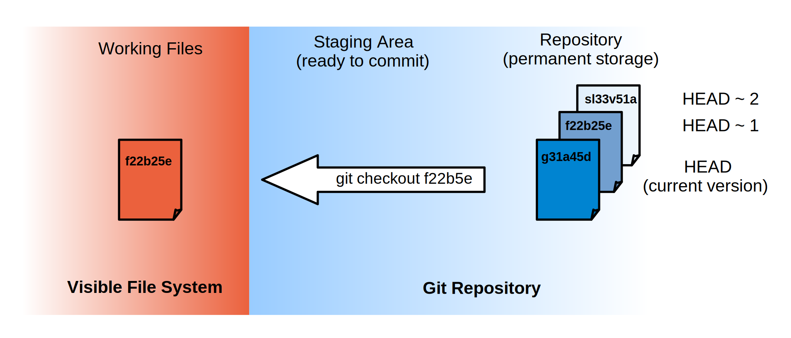

If we want to see what we changed when, we use git diff again, but refer to old versions using the notation HEAD~1, HEAD~2, and so on:
$ git diff HEAD~1 mars.txt
diff --git a/mars.txt b/mars.txt
index 315bf3a..b36abfd 100644
--- a/mars.txt
+++ b/mars.txt
@@ -1,2 +1,3 @@
Cold and dry, but everything is my favorite color
The two moons may be a problem for Wolfman
+But the Mummy will appreciate the lack of humidity
$ git diff HEAD~2 mars.txt
diff --git a/mars.txt b/mars.txt
index df0654a..b36abfd 100644
--- a/mars.txt
+++ b/mars.txt
@@ -1 +1,3 @@
Cold and dry, but everything is my favorite color
+The two moons may be a problem for Wolfman
+But the Mummy will appreciate the lack of humidity
In this way, we build up a chain of revisions. The most recent end of the chain is referred to as HEAD; we can refer to previous revisions using the ~ notation, so HEAD~1 (pronounced "head minus one") means "the previous revision", while HEAD~123 goes back 123 revisions from where we are now.
We can also refer to revisions using those long strings of digits and letters that git log displays. These are unique IDs for the changes, and "unique" really does mean unique: every change to any set of files on any machine has a unique 40-character identifier. Our first commit was given the ID f22b25e3233b4645dabd0d81e651fe074bd8e73b, so let's try this:
diff --git a/mars.txt b/mars.txt
index df0654a..b36abfd 100644
--- a/mars.txt
+++ b/mars.txt
@@ -1 +1,3 @@
Cold and dry, but everything is my favorite color
+The two moons may be a problem for Wolfman
+But the Mummy will appreciate the lack of humidity
That's the right answer, but typing random 40-character strings is annoying, so Git lets us use just the first few:
$ git diff f22b25e mars.txt
diff --git a/mars.txt b/mars.txt
index df0654a..b36abfd 100644
--- a/mars.txt
+++ b/mars.txt
@@ -1 +1,3 @@
Cold and dry, but everything is my favorite color
+The two moons may be a problem for Wolfman
+But the Mummy will appreciate the lack of humidity
All right: we can save changes to files and see what we've changed—how can we restore older versions of things? Let's suppose we accidentally overwrite our file:
$ nano mars.txt
$ cat mars.txt
We will need to manufacture our own oxygen
git status now tells us that the file has been changed, but those changes haven't been staged:
$ git status
# On branch master
# Changes not staged for commit:
# (use "git add <file>..." to update what will be committed)
# (use "git checkout -- <file>..." to discard changes in working directory)
#
# modified: mars.txt
#
no changes added to commit (use "git add" and/or "git commit -a")
We can put things back the way they were by using git checkout:
$ git checkout HEAD mars.txt
$ cat mars.txt
Cold and dry, but everything is my favorite color
The two moons may be a problem for Wolfman
But the Mummy will appreciate the lack of humidity
As you might guess from its name, git checkout checks out (i.e., restores) an old version of a file. In this case, we're telling Git that we want to recover the version of the file recorded in HEAD, which is the last saved revision. If we want to go back even further, we can use a revision identifier instead:
$ git checkout f22b25e mars.txt
It's important to remember that we must use the revision number that identifies the state of the repository before the change we're trying to undo. A common mistake is to use the revision number of the commit in which we made the change we're trying to get rid of. In the example below, we want retrieve the state from before the most recent commit (HEAD~1), which is revision f22b25e:
Git Checkout
The following diagram illustrates what the history of a file might look like (moving back from HEAD, the most recently committed version):
If you read the output of git status carefully, you'll see that it includes this hint:
(use"git checkout -- <file>..." to discard changes in working directory)
As it says, git checkout without a version identifier restores files to the state saved in HEAD. The double dash -- is needed to separate the names of the files being recovered from the command itself: without it, Git would try to use the name of the file as the revision identifier.
The fact that files can be reverted one by one tends to change the way people organize their work. If everything is in one large document, it's hard (but not impossible) to undo changes to the introduction without also undoing changes made later to the conclusion. If the introduction and conclusion are stored in separate files, on the other hand, moving backward and forward in time becomes much easier.
Recovering Older Versions of a File
Jennifer has made changes to the Python script that she has been working on for weeks, and the modifications she made this morning "broke" the script and it no longer runs. She has spent ~ 1hr trying to fix it, with no luck...
Luckily, she has been keeping track of her revisions using Git! Which commands below will let her recover the last committed version of her Python script called data_cruncher.py?
$ git checkout HEAD
$ git checkout HEAD data_cruncher.py
$ git checkout HEAD~1 data_cruncher.py
$ git checkout <unique ID of last revision> data_cruncher.py